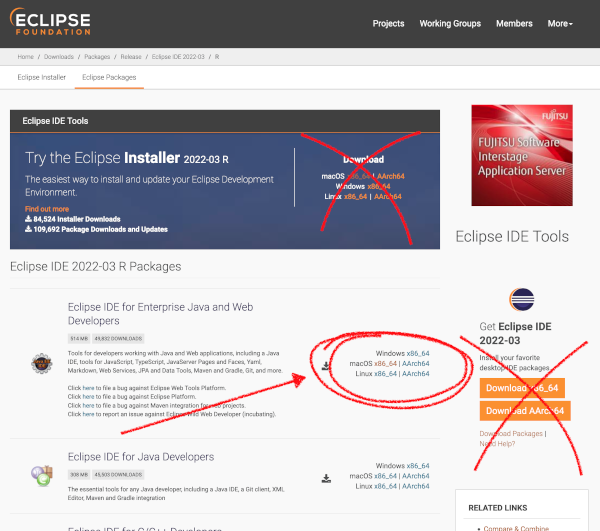
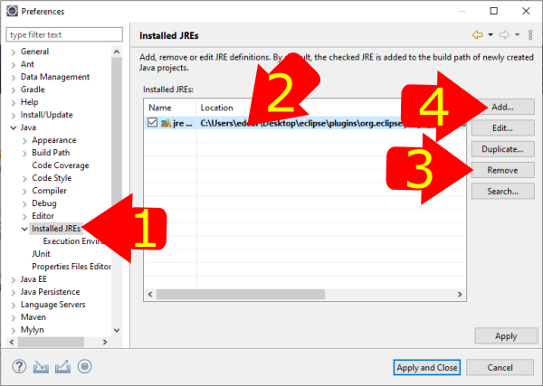
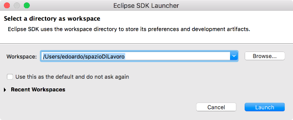
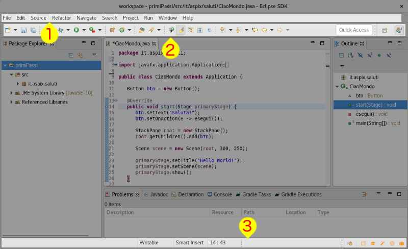
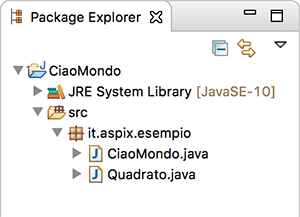

Gli strumenti essenziali
Per poter sviluppare programmi ci servono degli strumenti, nel caso di quelli che vogliamo sviluppare noi abbiamo bisogno di tre cose: il "Java Development Kit", una libreria per sviluppare applicazioni con interfaccia grafica e un ambiente di sviluppo (una specie di editor di testo più sofisticato).
Java Development Kit
Il "Kit di sviluppo Java" è più conosciuto come JDK, e contiene un lungo elenco di programmi utilizzati dagli sviluppatori per creare e gestire programmi con java. Noi useremo soltanto alcuni di questi strumenti ma il JDK va comunque installato.
Java ha un meccanismo predefinito per le versioni e dovremo farci attenzione: alcune versioni sono marcate come LTS cioè "Long Term Support" (versioni con lungo supporto) e scaricabili a lungo, fanno parte di questo gruppo la versione 11 e 17, altre versioni come 9-10-12-13-14-15-16 sono soltanto intermedie quindi quando ne esce una versione successiva la precedente non è più facile da trovare.
In realtà non va installato "il" JDK ma "un" JDK perché ce ne sono molte versioni e di diversi produttori.
Per quanto riguarda la versione per noi sarebbe sufficiente una qualsiasi dalla 11 in poi, bisogna anche tener conto del fatto che chi ha sistemi funzionanti normalmente usa (ma non è un obbligo) una delle versioni chiamate "LTS", l'ultima di questo tipo è la versione 21 e scaricheremo questa.
Per via della licenza Open del JDK si può scegliere anche da quale produttore scaricare il JDK: funzionano tutti fondamentalmente allo stesso modo ma possono avere strumenti in più o assistenza più o meno lunga e in alcuni casi a pagamento (con garanzie aggiuntive in questi casi). Ad esempio fanno una versione del JDK: Adoptium Working Group, Oracle, Amazon BellSoft e anche Microsoft.
Libreria grafica
Questa non è sempre necessaria ma noi la useremo perché vogliamo scrivere applicazioni con una interfaccia grafica abbastanza versatile, ne useremo una sviluppata sempre dallo stesso gruppo che sviluppa java e che si chiama JavaFX, fino poco tempo fa era inclusa nel JDK standard ma adesso non più.
Ambiente di sviluppo
Questi (tutt'altro che piccoli) normalmente vengono chiamati IDE (Integrated Development Environment) e ci aiutano molto nella scrittura dei programmi: in teoria non necessari ma in pratica sono indispensabili. Ne esistono molti ma per Java i più usati sono Eclipse, NetBeans e Intellij IDEA. I primi due sono Open Source e il terzo no ma è molto usato.
Il nostro ambiente
Va bene una qualsiasi combinazione di JDK+IDE+JavaFX che consenta di sviluppare applicazioni, qui riportiamo la soluzione più semplice che usa tutto software Open: Eclipse come IDE e il JDK di BellSoft (perché include già JavaFX e ci risparmia un po' di lavoro e di seccature) come JDK.
Installazione
Il lavoro da fare cambia a seconda del fatto che il sistema abbia già o meno una versione del JDK installato ma questo è facile da verificare: basta aprire un terminale, scrivere "java" e battere invio, se il comando da errore il JDK non c'è.
Attenzione: le indicazioni che verranno date qui sotto vanno seguite molto scrupolosamente, prima di prendere una versione diversa da quella specificate è meglio chiedere perché potrebbe succedere che alcune combinazioni di Edclipse/JDK non siano del tutto compatibili.
Installazione ambiente di sviluppo
- Scaricare Eclipse
- Andare alla pagina dei download di Eclipse, la versione deve essere 2023-06 o successiva (ad esempio 2023-09 o 2024-03 vanno bene)
- Scaricare "Eclipse IDE for Enterprise Java and Web Developers", è un file zip,
fate però attenzione all'architettura (x86_64 o AArch64):
- Per Linux: da terminale usate il comando `uname -m` che vi darà l'indicazione necessaria
- Per macOS: dal menu mela in alto a sinistra fate click su "Informazioni su questo Mac", se come Chip trovate qualcosa che inizia con "Apple M..." scaricate AArch64 altrimenti x86_64
- Per Windows scaricate x86_64

- Scompattare il file .zip appena scaricato sulla scrivania (Attenzione: per scompattare questo file serve un programma che funzioni bene, purtroppo non è il caso della funzionalità base di windows, se non ne avete uno potete scaricare e installare 7zip, va bene il tipo "msi" per Windows 64bit)
- Scaricare e installare il JDK versione 21 Liberica dal sito di Bell Soft:
- dalla pagina dei download are click su "JDK 21 LTS"
- scorrere in basso fino alla sezione del vostro sistema operativo e fate click sulla vostra architettura (qui chiamano "AArch64" come "ARM" e X86_64 come "x86")
- come "Package" scegliere "Full JDK"

- scaricare lo zip
- scompattare il file zip sulla scrivania
- Arrivati a questo punto sulla scrivania devono esserci due cartelle: una di eclipse (chiamata "eclipse") e una del JDK (con un nome tipo "jdk-21.0.5-full").
- Configurare Eclipse
- avviare eclipse (doppio click sul programma eclipse che si trova nella sua cartella)
- al primo avvio compare un pannello "Select a directory as workspace", quella è la cartella in cui Eclipse metterà tutti i file su cui lavora, la possiamo lasciare dove dice Eclipse o crearne una sulla scrivania, una volta deciso click su "launch"
- aprire le preferenze di Eclipse: menu "Window/Preferences"
- rimuovere l'unico JDK presente (e anche tutti gli altri se ce ne fossero) e poi
aggiungerne uno nuovo

- scegliere "Standard VM" e click su "next"
- click sul pulsante "Directory..." e selezionare la cartella del JDK che è stata scompattata prima sulla scrivania
- nel campo "JRE name" comparirà automaticamente un nome (qualcosa tipo "jdk-21.0.2-full"), click su "finish"
Utilizzare l'ambiente di sviluppo
Gli Integrated Development Environment sono strumenti molto articolati che aiutano gli sviluppatori nello svolgere moltissimi compiti, quello che facciamo adesso è creare il primo progetto: un file sorgente java viene scritto appunto all'interno di un progetto.
Eclipse
Avvio dell'IDE
Eclipse organizza i progetti all'interno di spazi di lavoro, in ogni sistema possono essere presenti più spazi di lavoro ed Eclipse ci chiede quale vogliamo usare, in pratica è una cartella che contiene dei progetti e delle impostazioni.

Nel caso questa finestra non compaia è possibile far sì di riaverla al prossimo avvio dell'applicazione impostando una preferenza: dalla finestra delle preferenze (menu "/Window/preferences..." per Windows o Linux), sulla sinistra selezionare General, Startup and Shutdown, Workspaces. A questo punto bisogna mettere la spunta su "Prompt for workspace on startup".
In ogni caso dal menu File di Eclipse è possibile cambiare lo spazio di lavoro usando la voce Switch workspace.
La prima volta che si avvia Eclipse compare un pannello informativo, per adesso non ci interessa click su "Hide" il alto a destra.
Creare un progetto
- click sul menu /File/New/Project...
- dal gruppo "Java" selezionare "Java project" poi click su "next"
- inserire il nome del progetto
- rimuovere la spunta in basso da "Create modude-infop.java file"
- click su finish
- a questo punto compare una finestra che chiede se si vuole aprire una nuova "Prospettiva", click su "Open Perspective"
Ora possiamo creare nuove classi java utilizzando anche gli oggetti di JavaFX.
La finestra di Eclipse

La struttura generale della finestra dell'ambiente di sviluppo Eclipse è simile a quella di molte altre applicazioni. Dall'alto troviamo: la barra del titolo, quella dei menu (con il segnalino "1" nella figura), la barra degli strumenti ("2" nella figura), l'area di lavoro e la barra di stato ("3" nella figura).
Nella barra del titolo troviamo nell'ordine: il nome dello spazio di lavoro, il percorso del file relativamente alla cartella dello spazio di lavoro ... e il nome del programma!
Nella barra di stato per ora ci interessano due informazioni:
- la prima è Smart Insert, facendoci doppio click diventa Overwrite e il cursore anziché inserire il testo facendo scorrere verso destra quello già presente lo sovrascriverà.
- le coordinate in cui si trova il cursore, la coppia 14:43 nell'immagine si riferisce alla riga 14 colonna 43
Barra degli strumenti
Vediamo alcuni degli strumenti a nostra disposizione nella configurazione standard partendo da sinistra:
- Crea un nuovo oggetto (ad esempio un file o un progetto)
- Salva il file su cui si sta lavorando
- Avvia l'oggetto attualmente attivo (ad esempio il programma che stiamo modificando)
- Permette di cercare un all'interno di un progetto e dell'intero workspace
- (sulla destra) questo pulsante e i suoi vicini servono per cambiare l'organizzazione dello spazio di lavoro, quando si sta lavorando su un progetto java normalmente è evidenziato. Se si vuole ritornare all'organizzazione originale dello spazio di lavoro basta fare click qui con il destro e poi selezionare "reset" dal menu che compare.
Lo spazio di lavoro
Nello spazio di lavoro i contenuti sono organizzati collezionando delle schede in gruppi come quello qui sotto.
Ogni singola linguetta contiene tre informazioni: la prima icona rappresenta l'oggetto visualizzato (ad esempio per un file java) seguito dal nome e da per chiuderla.
Sulla destra l'icona serve per minimizzare il gruppo mentre ser per massimizzare il gruppo, per riportarlo alle dimensioni normali basta fare click su .
Se nello spazio di lavoro ci servono ulteriori schede possiamo aprirle dal menu "/Windows/Show View" o facendo doppio click sul nome di un file nella scheda "Package explorer".
Alcune schede risultano utili nello sviluppo delle applicazioni Java: Package Explorer, Console e Problems:
- Package Explorer
- Qui compare la struttura del nostro progetto nascondendo alcune cartelle non essenziali. Se vengono copiati dei file nel progetto e non compaiono basta fare click nella cartella che li contiene con il destro e poi selezionare "refresh".
- Console
- In cui vengono stampati i messaggi di errore durante il funzionamento del programma (runtime)
- Problems
- In cui vengono elencati gli errori presenti nello spazio di lavoro, facendo click sull'icona (sulla destra) è possibile limitare il numero di errori mostrati (ad esempio selezionando "Show" e poi "Error/Warnings on project").
Creazione di un progetto e dei suoi contenuti
Eclipse gestisce molti tipi di progetto (dipende dalla versione che abbiamo scaricato e dai plugin installati), vediamo un modo per creare un progetto per sviluppare software Java.
- click sul menu "/File/New/Other...
- dal gruppo "Java" selezionare "Java Project" e poi click su "Next >"
- Scrivere il nome del progetto su "Project name:" e poi "Finish"

Dopo aver creato il progetto dalla scheda "Package explorer" è possibile vederne la struttura cliccando sul triangolo grigio (se non è già rivolto verso il basso). Il primo gruppo "JRE System Library" rappresenta la versione di Java che stiamo utilizzando mentre "src" contiene i file sorgente.Per creare un nuovo pacchetto: click con il tasto destro su "src" poi "New" e "Package" (comparirà una icona che indica un pacchetto vuoto, diventerà quando inseriremo delle classi o altro contenuto), analogamente per creare una nuova classe click con il destro sul nome di un pacchetto e poi "New" e "Class".